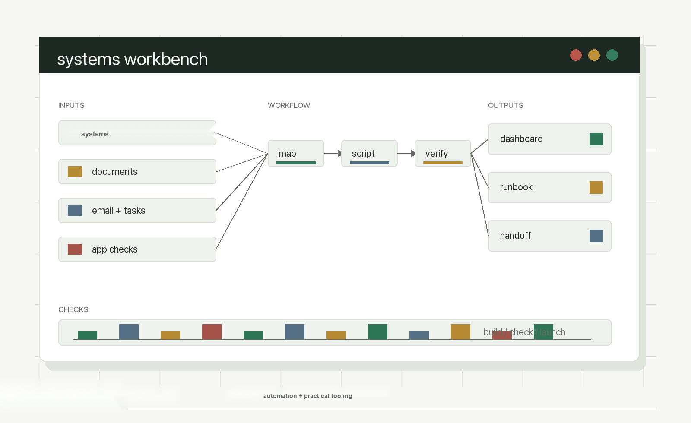

Technical leadership / AI enabled systems / support operations
Technical leadership for teams that need systems to hold up, adapt, and stay reliable.
I work where systems meet process and where details meet daily operations: integration delivery, support workflows, data cleanup, and handoffs people can maintain. I am strongest in ambiguous work: seeing around corners, clarifying tradeoffs, and helping teams move without losing the details.
